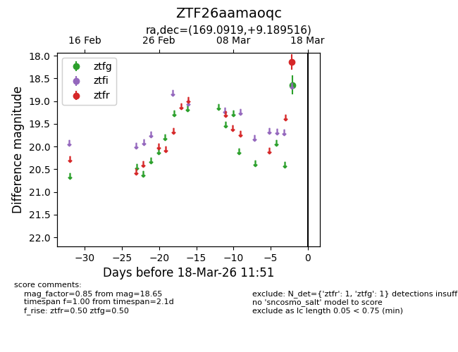
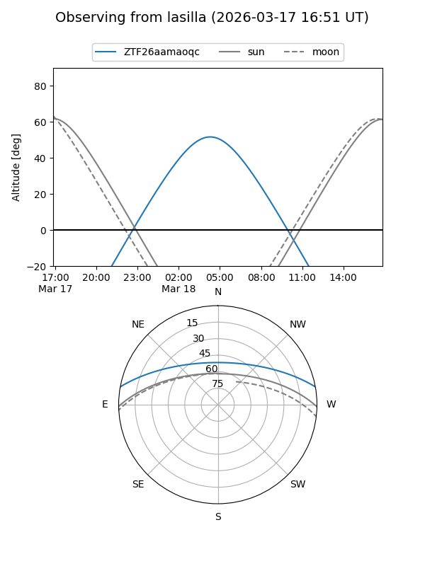
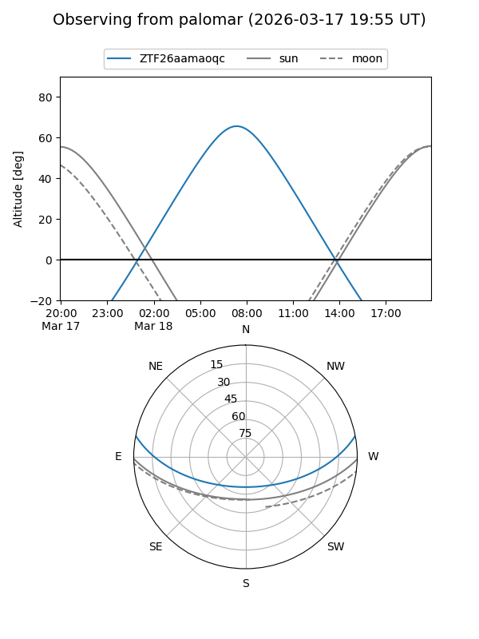

ZTF26aamaoqc
Target ZTF26aamaoqc at 2026-03-18 11:53
Aliases and brokers:
FINK: link
Lasair: link
ALeRCE: link
alt names
ZTF26aamaoqc (ztf,fink_ztf)
Coordinates:
equatorial (ra, dec) = 169.0919,+9.18952
equatorial (HMS+DMS) = 11:16:22.04,+09:11:22.26
galactic (l, b) = (247.0768,+61.26743)
Flags:
Photometry:
last ztfg=18.65, ztfr=18.14
1 ztfg, 1 ztfr detections
Lightcurve

Visibility


Additional plots